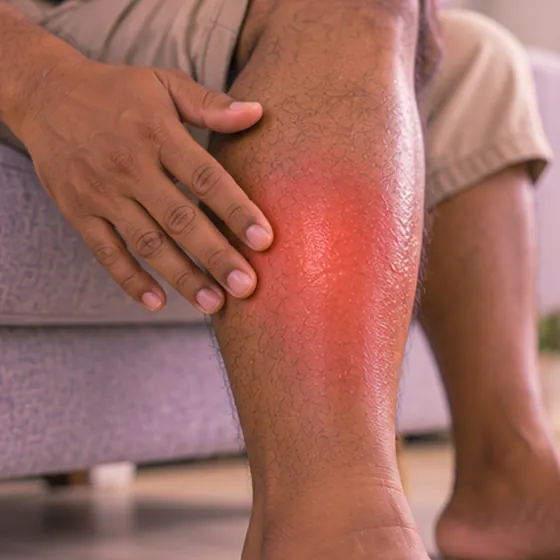

易栓症
血液比一般人更容易形成血凝块的倾向
这是什么
有些人天生或后来出现血液变化，使血凝块更容易形成。许多人从未出现血栓，但风险比较高。
- 血液和血管
- 常有家族倾向
- 可能表现为血栓
- 就诊科室
- 血液科医生、家庭医生
- 多发人群
- 有血栓家族史的人；部分孕期女性
- 传染性
- 不传染
- 病程
- 通常是长期的；医生可以说明如何降低风险
常见表现

早期常无症状无症状 
皮肤红肿发热皮肤红肿热痛
其他症状
- 突然气促或胸痛
- 不止一次出现血栓，或年纪轻轻就出现血栓
为什么会这样

家族遗传遗传易感性 久站或久坐不动长时间不动
其他原因
- 某些免疫问题会使血液更容易凝结
- 吸烟、超重和某些激素类药物也会增加风险
出现这些情况请先看医生
- 突然胸痛或呼吸困难：拨打999
- 脸部歪斜、手臂无力或说话困难：拨打999
- 腿或手臂肿胀疼痛发热，尤其是一侧：立即去医院
- 咳血或突然剧烈腹痛
- 已怀孕或打算怀孕：请及早告诉医生
如果有以上情况，请先看医生，再来做调理。
本页只是一般性的健康资讯。请继续按时服用平常的药物，并继续看医生。
请继续日常治疗
请继续按医嘱服药，并按时复诊。我们的调理是温和的辅助，不能代替医疗。
日常护理

按医嘱用药遵医嘱服药 
每天保持活动规律运动 
多喝水充足补水 
戒烟戒烟
更多自我照顾的方法
- 手术或做检查治疗前，告诉医生或牙医你的情况
告诉理疗师
- 血栓或新出现的腿部肿胀
- 服用抗凝药
- 怀孕
- 心脏病
调理师会在开始前和你确认这一项。
常见问题
易栓症是什么？
血液比一般人更容易形成血凝块的倾向。有些人天生或后来出现血液变化，使血凝块更容易形成。许多人从未出现血栓，但风险比较高。
易栓症有哪些常见表现？
早期常无症状；皮肤红肿发热
为什么会有易栓症？
家族遗传；久站或久坐不动
有易栓症要怎么照顾自己？
按医嘱用药；每天保持活动；多喝水；戒烟
AI Body Master 的调理对易栓症有帮助吗？
调理是温和的无针经络养生辅助，不能治疗或治愈易栓症，也不能代替药物或医生。开始前请告诉理疗师。
相关疾病
参考资料: General information based on public health sources such as Mayo Clinic, NHS, Cleveland Clinic and NCBI StatPearls.
页面更新: 2026-11-04